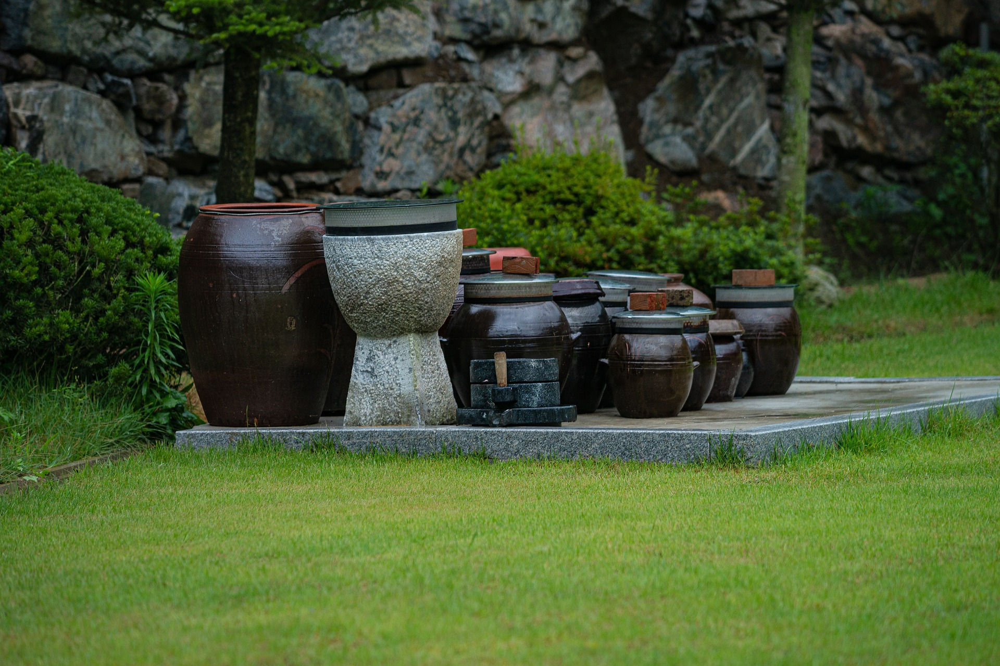
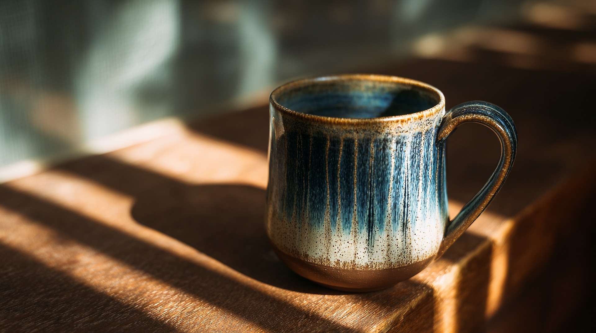
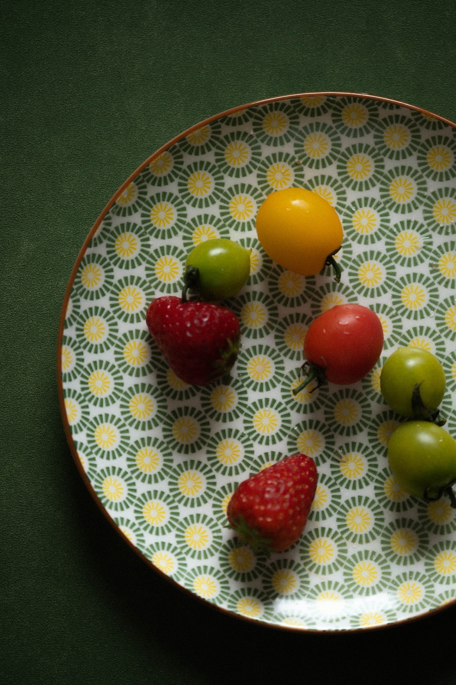

Nuestro Catálogo
Explora nuestras piezas únicas hechas a mano agrupadas por categoría.



Vasija de Barro Ceremonial
Modelada a mano y horneada a leña, acabado con engobes naturales.
Ver PDF
Taza Texturada Esmaltada
Pieza de cerámica utilitaria apta para microondas y vajilla diaria.
Ver PDF

Paisaje del Interior (Óleo)
Obra sobre lienzo que retrata los campos y horizontes del interior.
Ver PDF
Acrílico Texturado Tierra
Composición abstracta utilizando pigmentos minerales y arcilla local.
Ver PDFContacto
¿Tienes alguna consulta sobre nuestros productos? Envíanos un mensaje.